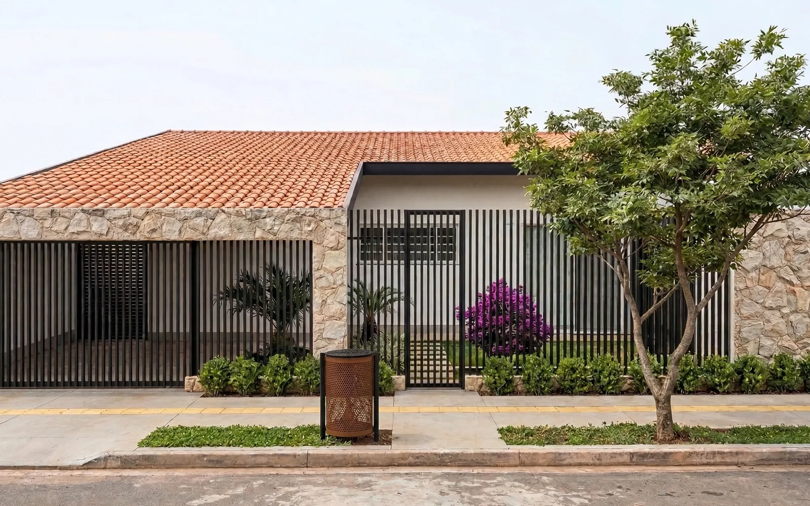
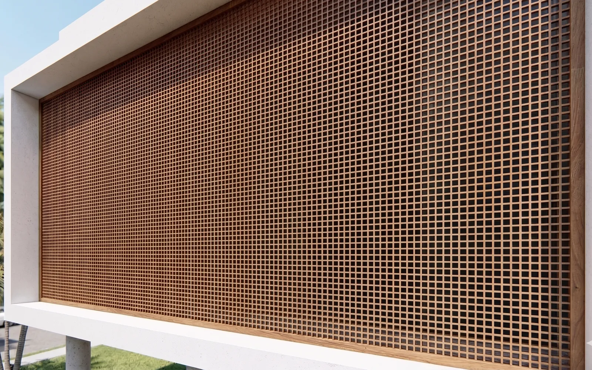
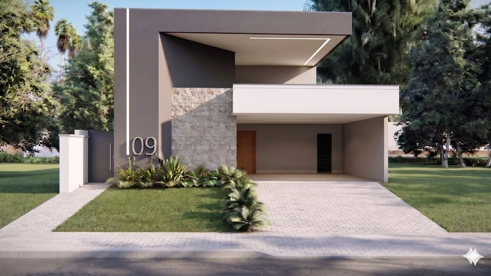

Residencial · fachada
Fachada em Goiânia
Ver imagens deste projeto na galeria do escritório.
Fachadas residenciais em Goiânia
Reformas e projetos de fachada residencial que equilibram entrada, privacidade, materiais, iluminação e leitura arquitetônica da casa.

Leitura de projeto
Uma fachada bem resolvida não depende de excesso de revestimentos. Ela nasce da proporção entre volumes, aberturas, cobertura, muros, portões, iluminação e paisagismo.
Nos projetos de fachada, o escritório busca uma linguagem sóbria e durável, com materiais naturais, sombra bem posicionada e uma presença visual compatível com a casa e com a rua.
Quando faz sentido
Processo
O processo é conduzido para transformar referências soltas em decisões claras, imagens compreensíveis e informação útil para obra.
Análise de proporções, cobertura, aberturas, acessos, garagem e pontos de melhoria.
Definição de cheios e vazios, linhas horizontais, planos, sombra e hierarquia da entrada.
Escolha de revestimentos, cores, serralheria, madeira, pedra, luz externa e vegetação.
Imagens, medidas principais e direcionamento para fornecedores e obra.
Projetos relacionados
Ver imagens deste projeto na galeria do escritório.

Ver imagens deste projeto na galeria do escritório.

Ver imagens deste projeto na galeria do escritório.
Dúvidas frequentes
Em muitos casos, sim. O projeto avalia o que pode ser aproveitado e onde intervenções pontuais podem mudar a leitura da casa.
Pode incluir, quando esses elementos fazem parte da composição da fachada e da entrada da residência.
Não precisa ser idêntica, mas deve ter coerência com a linguagem da casa, materiais e modo de uso dos moradores.
Contato
Envie uma mensagem pelo WhatsApp com o tipo de imóvel, cidade e o que você pretende desenvolver. O primeiro passo é entender o contexto.